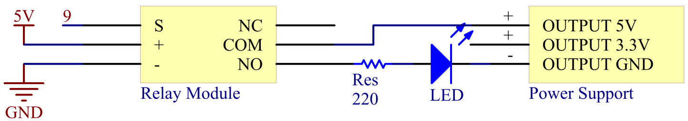

2.21 Relaismodul¶
Überblick¶
In dieser Lektion lernen Sie das Relaismodul kennen.
Erforderliche Komponenten¶

Komponenteneinführung¶
Wie wir vielleicht wissen, ist Relais ein Gerät, das verwendet wird, um eine Verbindung zwischen zwei oder mehr Punkten oder Geräten als Reaktion auf das angelegte Eingangssignal herzustellen. Mit anderen Worten, Relais stellen eine Isolation zwischen der Steuerung und dem Gerät bereit, da Geräte sowohl mit Wechselstrom als auch mit Gleichstrom arbeiten können. Sie empfangen jedoch Signale von einem Mikrocontroller, der mit Gleichstrom arbeitet, weshalb ein Relais erforderlich ist, um die Lücke zu schließen. Das Relais ist äußerst nützlich, wenn Sie eine große Menge an Strom oder Spannung mit einem kleinen elektrischen Signal steuern müssen.
Jedes Relais besteht aus 5 Teilen:
{kind=link}
1. Electromagnet – It consists of an iron core wounded by coil of wires. When electricity is passed through, it becomes magnetic. Therefore, it is called electromagnet.
2. Armature – The movable magnetic strip is known as armature. When current flows through them, the coil is it energized thus producing a magnetic field which is used to make or break the normally open (N/O) or normally close (N/C) points. And the armature can be moved with direct current (DC) as well as alternating current (AC).
3. Spring – When no currents flow through the coil on the electromagnet, the spring pulls the armature away so the circuit cannot be completed.
Satz elektrischer Kontakte - Es gibt zwei Kontaktpunkte:
Normalerweise offen - verbunden, wenn das Relais aktiviert ist, und getrennt, wenn es inaktiv ist.
Normalerweise geschlossen - nicht angeschlossen, wenn das Relais aktiviert ist, und angeschlossen, wenn es inaktiv ist.
Formrahmen - Die Relais sind zum Schutz mit Kunststoff bedeckt.
Funktionieren des Relais
Das Funktionsprinzip des Relais ist einfach. Wenn das Relais mit Strom versorgt wird, fließen Ströme durch die Steuerspule. Infolgedessen beginnt der Elektromagnet zu erregen. Dann wird der Anker von der Spule angezogen, wobei der bewegliche Kontakt zusammengezogen wird, wodurch eine Verbindung mit den normalerweise offenen Kontakten hergestellt wird. Der Stromkreis mit der Last wird also erregt. Ein Unterbrechen des Stromkreises wäre dann ein ähnlicher Fall, da der bewegliche Kontakt unter der Kraft der Feder zu den normalerweise geschlossenen Kontakten hochgezogen wird. Auf diese Weise kann das Ein- und Ausschalten des Relais den Zustand eines Lastkreises steuern.
Fritzing Circuit¶
In diesem Beispiel verwenden wir das Netzteilmodul, um die Last mit Strom zu versorgen. Verwenden Sie als Beispiel die LED.

Schematische Darstellung¶
{kind=link}
Code¶
Sobald die Codes auf die Mega2560-Karte hochgeladen wurden, können Sie sehen, dass das Relaismodul das Schließen und Unterbrechen des externen Stromkreises steuert, wodurch sich sein Arbeitszustand eine Sekunde lang ändert. Ausführliche Informationen zum Code finden Sie in Teil 1- 1.2 Digitales Schreiben.
{kind=link}